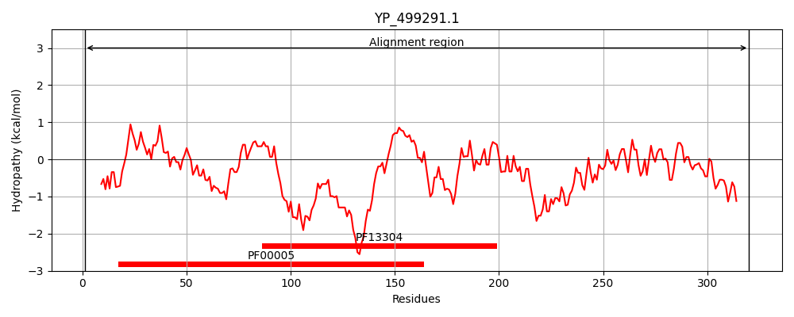
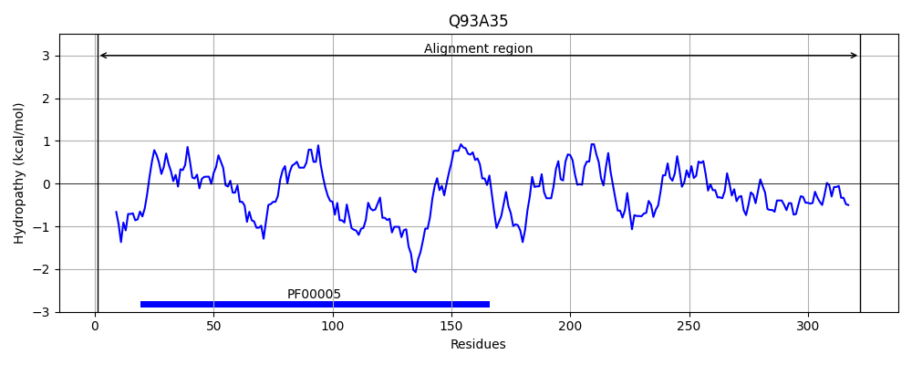
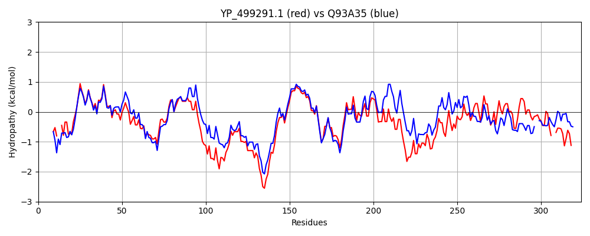

Hit Accession: Q93A35
Hit TCID: 3.A.1.12.8
Hit Description: gnl|BL_ORD_ID|17276 gnl|TC-DB|Q93A35|3.A.1.12.8 BilEA - Listeria monocytogenes.
Mach Len: 324
e:0.000000
Query TMS Count : 0
Hit TMS Count: 0
TMS-Overlap Score: 0.000000
Predicted Substrates:CHEBI:3073;glycine betaine, CHEBI:26271;proline
BLAST Alignment:
Score: 881 , Bit scores: 343 bits, E-value: 2.2e-118, Alignment length: 324, Percentage identity: 53
Query: 1 MIKFKNVTKRYG--KHVAVDNISFNINEGEFFVLIGPSGCGKTTTLKMINRLIHLSEGYIYFKDKPISDYPVYEMRWDIGYVLQQIALFPHMTIKENIAQVPQMKKWKEKDIDKRVDELLEMVGLEPEKYKNRKPDELSGGQRQRVGVIRALAADPPVILMDEPFSALDPISREKLQDDLIELQTKIKKTIIFVTHDIQEAMKLGDKICLLNEGHIEQIDTPEGFKNNPQSEFVKQFMGSHLEDDAPCVEENAIIRDLDIMKPIDEVTSMSAYPIVYDNQPIEVLYQLLSESERVIVMQEDSVGQYV--IDRKDIFKYLSQKKE 320
MI+F NV+K+Y K AV+N++ +I +GEFFV IGPSGCGKTTTLKMINRLI L+ G IY +K ISDY ++E+RWDIGYVLQQIALFPHMTI+ENIA VP++KKW ++ I R+ ELL+ VGL+PE Y++RKP ELSGG++QRVGV+RALAADP +ILMDEPFSALDPISR++LQ D+ LQ KIKKTI+FVTHD+QEA+ LGD+IC++ G I Q+ TP+ NP+++FVK F+ S + P +E N + DL + + +P+E L + ++E + + V D G Y+ + K + ++L++ E
Sbjct: 1 MIRFDNVSKKYSDDKTAAVNNVTLDIKDGEFFVFIGPSGCGKTTTLKMINRLIPLTTGTIYINEKRISDYDIHELRWDIGYVLQQIALFPHMTIEENIAIVPELKKWSKEKIHDRITELLDSVGLDPESYRHRKPAELSGGEQQRVGVVRALAADPGIILMDEPFSALDPISRQRLQQDISALQKKIKKTIVFVTHDMQEALALGDRICVMQGGEIVQVATPQEIMKNPENDFVKDFLASGHAFNTPILEANFTVNDLIEADLFYSYQTSDGTLGISSTEPVENLVRRIAEEQSIPV--TDEAGNYIGTVSNKHVMQFLARHLE 322 | Protein Hydropathy Plots: |
|---|
|  |  |
Pairwise Alignment-Hydropathy Plot:
|
|---|
|  |